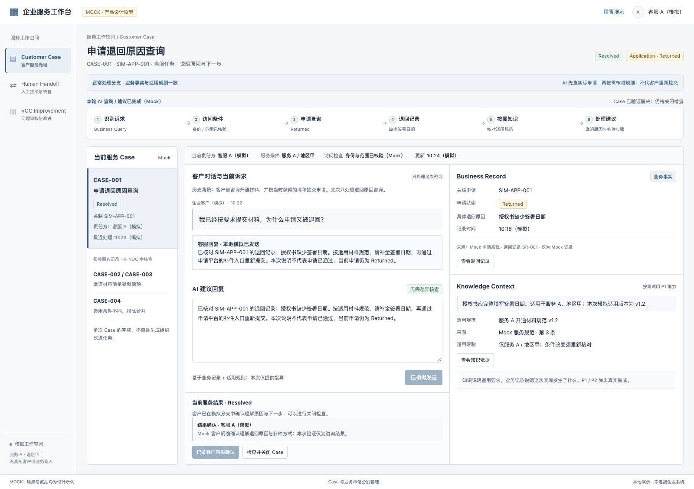
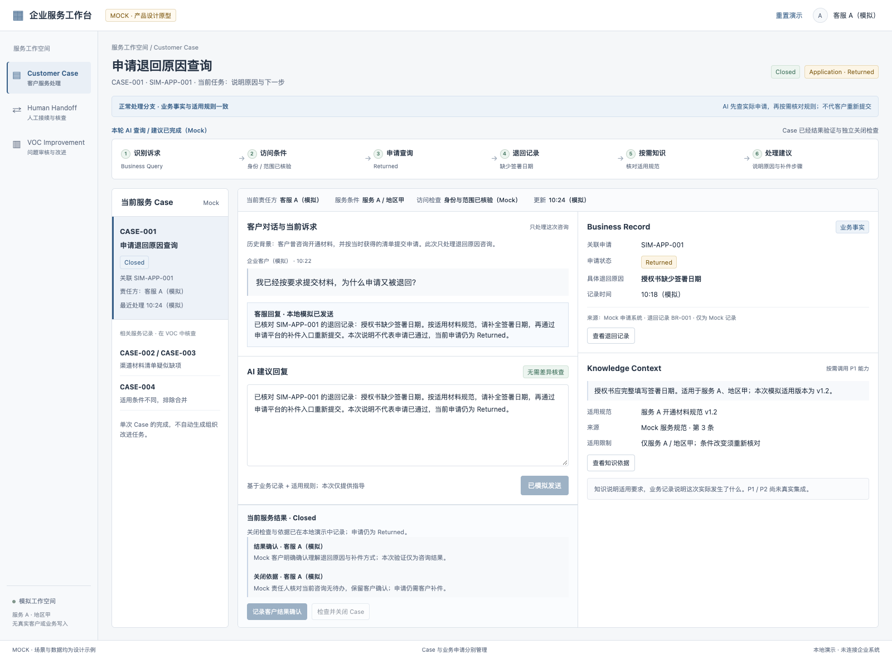
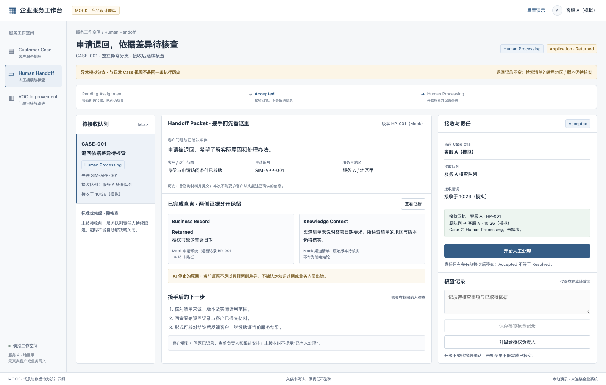
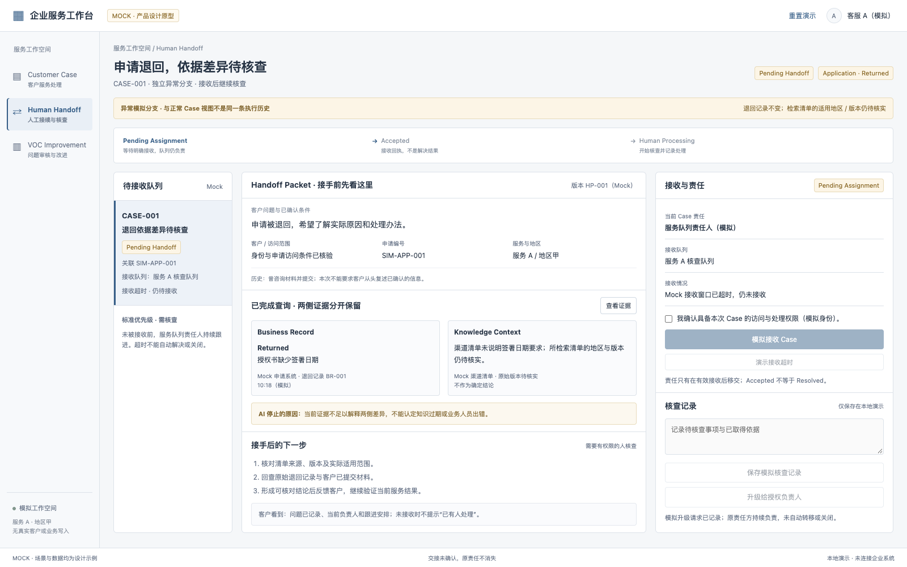
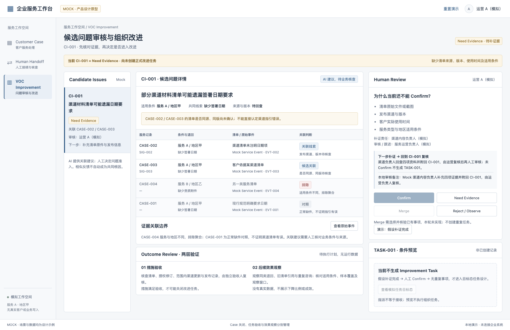
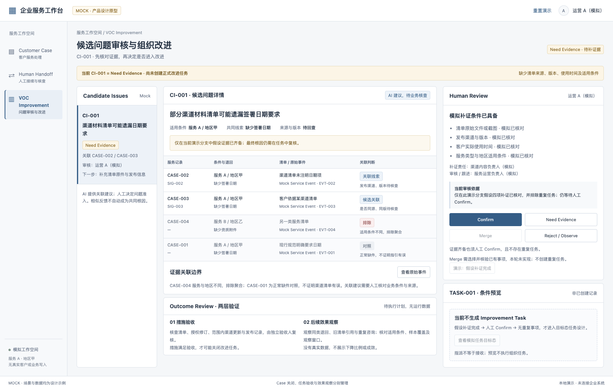
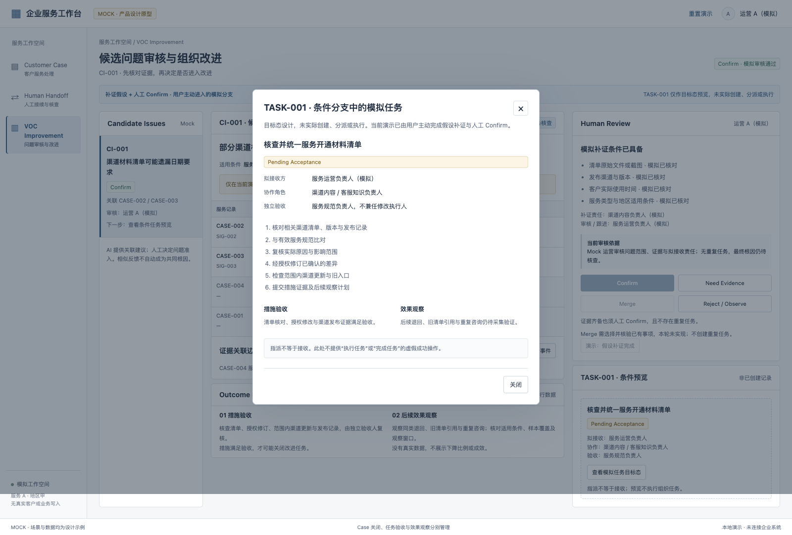

Round 5 · 实际浏览器检查 · Mock only本地 UI 操作记录与覆盖边界
真实 Chromium 操作、观察与截图。只检查已有原型的本地状态和约束；没有运行 LLM、企业 API、聚类引擎或正式组织任务。
返回 B05 测试矩阵 · 14 组检查明细 · 操作状态原始记录
TC03
仅本地结果确认与关闭；业务查询 / 路由不在执行范围
- 测试前状态
- AI Processing
Application · Returned - 分支
- 正常处理分支 · 业务事实与适用规则一致
AI 先查实际申请，再按需核对规则；不代客户重新提交
1. 模拟发送建议回复
- 实际状态
- Waiting for Customer
Application · Returned - 实际反馈
- 仅模拟发送；Case 等待客户结果确认，申请仍为 Returned。
- 按钮状态
- 客户结果确认可用；关闭检查不可用
2. 确认客户结果条件并记录依据
- 实际状态
- Resolved
Application · Returned - 实际反馈
- 本地 Case 已模拟验证解决；Application 仍 Returned。
- 结果与关闭依据
- 结果确认 · 客服 A（模拟）
Mock 客户明确确认理解退回原因与补件方式；本次验证仅为咨询结果。 - 按钮状态
- 客户结果确认不可用；关闭检查可用

3. 完成独立关闭检查并记录原因
- 实际状态
- Closed
Application · Returned - 实际反馈
- 本地 Case 已模拟关闭；申请状态保持 Returned。
- 结果与关闭依据
- 结果确认 · 客服 A（模拟）
Mock 客户明确确认理解退回原因与补件方式；本次验证仅为咨询结果。
关闭依据 · 客服 A（模拟）
Mock 责任人核对当前咨询无待办，保留客户确认；申请仍需客户补件。 - 按钮状态
- 客户结果确认不可用；关闭检查不可用

核对结果：本地状态与前置条件符合规则；不是申请开通结果
TC07
仅 Mock 权限确认、接收回执与责任接续；无后台通知
- 测试前状态
- Pending Handoff
Application · Returned - 分支
- 异常模拟分支 · 与正常 Case 视图不是同一条执行历史
退回记录不变；检索清单的适用地区 / 版本仍待核实 - 原责任方
- 服务队列责任人（模拟）
1. 确认模拟权限并接收 Case
- 实际状态
- Human Processing
Application · Returned - 实际反馈
- Mock 接收回执已记录；Case 为 Human Processing，尚未解决。
- 交接阶段
- Accepted
接收回执，不是解决结果 - 责任方
- 客服 A（模拟）
- 接收回执
- 接收回执：客服 A · HP-001
原队列 → 客服 A · 10:26（模拟）
Case 为 Human Processing，未解决。 - 按钮状态

2. 开始人工核查
- 实际状态
- Human Processing
Application · Returned - 实际反馈
- 开始本地人工核查；接收责任已保留。
- 交接阶段
- Human Processing
开始核查并记录处理 - 责任方
- 客服 A（模拟）
- 接收回执
- 接收回执：客服 A · HP-001
原队列 → 客服 A · 10:26（模拟）
Case 为 Human Processing，未解决。 - 按钮状态
核对结果：接收回执与责任完整；Case 继续 Human Processing，不自动解决
TC08
用户主动触发模拟超时；没有真实 SLA 定时器或重新分派后台
- 测试前状态
- Pending Handoff
Application · Returned - 分支
- 异常模拟分支 · 与正常 Case 视图不是同一条执行历史
退回记录不变；检索清单的适用地区 / 版本仍待核实 - 原责任方
- 服务队列责任人（模拟）
1. 点击演示接收超时
- 实际状态
- Pending Handoff
Application · Returned - 实际反馈
- 演示接收超时：仍 Pending Handoff，服务队列继续负责并升级。
- 交接阶段
- Pending Assignment
等待明确接收，队列仍负责 - 责任方
- 服务队列责任人（模拟）
- 按钮状态
- 接收 Case不可用

核对结果：Pending Assignment / Pending Handoff 与队列责任保留，升级请求仅本地记录
TC11
仅本地补证决定与准入门槛，不创建任务
- 测试前状态
- Need Evidence · 待补证据
- 分支
- 当前 CI-001 = Need Evidence · 尚未创建正式改进任务
缺少清单来源、版本、使用时间及适用条件
1. 保存 Need Evidence 及补证责任说明
- 实际状态
- Need Evidence · 待补证据
- 实际反馈
- CI-001 保持 Need Evidence；渠道负责人补证后回到原问题复核，未生成 TASK-001。
- 补证与复核
- 下一步补证 → 回到 CI-001 复核
渠道负责人回查四项资料并附回 CI-001，由运营复核后再人工审核；未 Confirm 不生成 TASK-001。
本地审核备注：Mock 渠道内容负责人补充四项证据并附回 CI-001，由运营负责人复核。 - 按钮状态
- 人工 Confirm不可用；任务预览不可用

核对结果：补证路径与责任显示；未生成 TASK-001
TC12
仅假设补证 + 人工 Confirm + 只读 Pending Acceptance 目标态，非真实创建 / 执行
- 测试前状态
- Need Evidence · 待补证据
- 分支
- 当前 CI-001 = Need Evidence · 尚未创建正式改进任务
缺少清单来源、版本、使用时间及适用条件
1. 主动模拟四项补证及无重复条件
- 实际状态
- Need Evidence · 待补证据
- 实际反馈
- 模拟补证条件已应用；尚未 Confirm，仍不生成任务。
- 补证与复核
- 当前审核依据
仅在此演示分支假设四项补证已核对，并排除重复任务；仍等待人工 Confirm。 - 按钮状态
- 人工 Confirm可用；任务预览不可用

2. 另行人工 Confirm
- 实际状态
- Confirm · 模拟审核通过
- 实际反馈
- 模拟审核通过；TASK-001 仅可预览，尚未创建或执行。
- 补证与复核
- 当前审核依据
Mock 运营审核问题范围、证据与拟接收责任；无重复任务，最终根因仍待核查。 - 按钮状态
- 人工 Confirm不可用；任务预览可用
3. 打开只读任务目标态预览
- 实际状态
- Confirm · 模拟审核通过
- 实际反馈
- 模拟审核通过；TASK-001 仅可预览，尚未创建或执行。
- 补证与复核
- 当前审核依据
Mock 运营审核问题范围、证据与拟接收责任；无重复任务，最终根因仍待核查。 - 按钮状态
- 人工 Confirm不可用；任务预览可用
查看当时的只读弹窗内容
TASK-001 · 条件分支中的模拟任务
×
目标态设计，未实际创建、分派或执行。当前演示已由用户主动完成假设补证与人工 Confirm。
核查并统一服务开通材料清单
Pending Acceptance
拟接收方
服务运营负责人（模拟）
协作角色
渠道内容 / 客服知识负责人
独立验收
服务规范负责人，不兼任修改执行人
核对相关渠道清单、版本与发布记录
与有效服务规范比对
复核实际原因与影响范围
经授权修订已确认的差异
检查范围内渠道更新与旧入口
提交措施证据及后续观察计划
措施验收
清单核对、授权修改与渠道发布证据满足验收。
效果观察
后续退回、旧清单引用与重复咨询仍待采集验证。
指派不等于接收。此处不提供“执行任务”或“完成任务”的虚假成功操作。
关闭

核对结果：补证不会自动 Confirm；只读预览无执行动作
14 组实际检查结果
包含取消、空输入、缺少必选条件、状态回退、责任保留和重置检查。通过仅指所列 UI 检查，不计算 Workflow 通过率。
- AI 查询建议完成不等于 Case 解决 · 通过
打开正常分支 → 检查六步与进度标题 → 核对结果验证及关闭按钮
- 查询依据与回复交付保持分离 · 通过
查看业务记录与知识依据并关闭弹窗 → 清空建议尝试发送 → 填写并模拟发送 → 打开客户确认后取消
- 客户结果确认需条件与依据，并保留责任记录 · 通过
尝试未勾选提交 → 勾选条件但清空依据再次提交 → 填写确认说明并提交 → 检查 Resolved 与保存记录
- Closed 另有关闭检查，Application 始终 Returned · 通过
打开关闭检查 → 不勾选提交被阻止 → 勾选但空依据仍被阻止 → 填写关闭依据并提交
- 人工接收需权限，且正常与异常分支独立 · 通过
切到异常分支 → 核对 Pending Handoff 与原队列责任 → 勾选并撤销权限 → 再次确认后接收
- 人工继续处理与升级保留接收责任 · 通过
开始人工核查 → 空记录保存被阻止 → 填写核查记录并保存 → 取消一次升级，再确认模拟升级 → 切回正常分支核对独立关闭状态
- 无人接收超时不丢责任，仍可有效接收 · 通过
重新打开异常分支 → 演示接收超时 → 核对 Pending Assignment / Pending Handoff 及队列责任 → 确认权限并继续接收
- Need Evidence 明确缺项、责任、补证及复核路径 · 通过
打开 VOC 初始视图 → 检查四项缺证与补证 / 审核责任 → 检查附回 CI-001 路径 → 检查 Confirm / Merge / 任务预览禁用
- 保存 Need Evidence 不自动创建 TASK-001 · 通过
打开补证决定后取消 → 再次打开并清空备注提交被阻止 → 填写补证责任说明并保存 → 检查状态、固定复核路径与反馈
- 补证完成仍需单独人工 Confirm · 通过
打开假设补证分支 → 未勾选及缺少无重复条件均被阻止 → 完整五项后应用假设条件 → 检查仍为 Need Evidence，任务预览仍禁用
- 人工审核后仅开放 Pending Acceptance 条件预览 · 通过
未完成审核确认不能提交 → 填写两项审核条件及准入依据 → 打开任务预览核对责任、措施和效果层 → 核对没有执行 / 完成操作
- 回到补证 / Observe / Reject 均移除任务访问 · 通过
Confirm 后保存 Need Evidence → 检查复核路径恢复、Confirm 与预览禁用 → 保存 Observe，再保存 Reject → 重置演示并核对各分支初始状态
- 业务标识与正常 / 异常事实一致 · 通过
读取共用 Mock 数据 → 核对关联 / 排除事件 → 三个视图检查标识及 Mock 标签
- 未发生页面脚本错误或业务网络调用 · 通过
仅静态核对的样例
TC09 / TC10 的候选关联、排除与对照是预置数据。查看原始事件入口不等于执行聚类算法，不能标记自动聚合或错误排除已通过。
查看实际打开的证据内容
候选关联的原始事件 · Mock
×
关联必须同时核对业务条件与来源，不能仅凭相似文本合并。
CASE-002
服务 A / 地区甲；缺少签署日期。渠道清单未注明日期项；发布渠道、版本待核查。
CASE-003
服务 A / 地区甲；缺少签署日期。客户依据某渠道清单；是否同源、同版待核查。
CASE-004
服务 B / 地区乙；缺少资质附件。另一类服务清单；适用条件不同，排除聚合。
CASE-001
服务 A / 地区甲；缺少签署日期。现行规范明确要求日期；正常缺件，不证明指引有误。
关闭